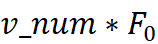
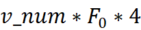
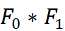
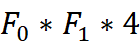
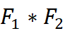
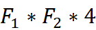

参赛队伍必须创建自己的GitHub账户，并在2023年7月21日23:59之前将参赛作品按照提交规范上传到Github账户中，并将项目的Github地址发送至邮箱ccfsys_cgc@163.com。项目应以cgc+自己队伍的英文名进行命名，例如：cgc_your_team_name。
cgc_your_team_name
├── your_team_name
│ ├── source_code.cpp
│ ├── makefile
│ └── README
├── your_team_name_report
│ └── report.pdf
└── your_team_name.exe
1. 程序源代码
包含完整源代码source_code.cpp，执行makefile文件应可编译出可执行文件（以英文队伍名.exe进行命名，例如：your_team_name.exe），并将生成的可执行文件放在上级目录中，即目标为../your_team_name.exe。
如果使用了第三方库，请在/your_team_name/README中详细说明安装和使用方法, 同时注意测试环境与本地保持一致，若无法复现将视为计算结果错误。
2. 技术报告文档
报告文档命名为report.pdf，内容包括但不限于基本算法介绍、设计思路和方法、算法优化、详细算法设计与实现、实验结果与分析、程序代码模块说明、详细程序代码编译说明、详细代码运行使用说明等。
注意提交压缩包中无需包含数据集等文件，只需以上文件。
可执行程序需接收7个参数，分别为：输入顶点特征长度、第一层顶点特征长度、第二层顶点特征长度、图结构文件名、输入顶点特征矩阵文件名、第一层权重矩阵文件名、第二层权重矩阵文件名。
例如：./your_team_name.exe 64 16 8 graph/1024_example_graph.txt embedding/1024.bin weight/W_64_16.bin weight/W_16_8.bin。
可执行程序需打印输出两个值，分别为最大的顶点特征矩阵行和执行时间,具体参考样例中your_team_name/gcn.cpp 输入的文件名均包含相对路径。
图结构文件为文本文件，第一行两个整数分别为图顶点数量（v_num）和边数量，之后每一行为一条边，格式为“源顶点id 目的顶点id”，顶点id从0开始 图结构文件中包含自环（即有边“i i”），包含反向边（即同时有边“i j”和边“j i”）。
输入顶点特征矩阵文件为二进制文件，包含个float32，大小为字节，
第一层权重矩阵文件为二进制文件，包含个float32，大小为字节，
第二层权重矩阵文件为二进制文件，包含个float32，大小为字节。
读取文件、分配内存、和数组初始化置0的时间均不统计在执行时间内，但预处理时间（例如顶点排序）等须计入执行时间。
具体参考样例中your_team_name/gcn.cpp。
注：读取文件必须使用样例中your_team_name/gcn.cpp文件内提供的readGraph()函数，不可修改，不计入执行时间内，若需转换为邻接表或是CSR等格式须在somePreprocessing()函数内实现，并计入执行时间。
CPU：Intel Xeon Gold 5117 @2.00GHz（物理核心数28，逻辑核心数56）
内存：512GB
操作系统：Ubuntu 21.10
g++或gcc编译器：9.4.0
注：上述仅表明最后测试代码时用的环境配置，不对选手进行开放，选手可使用自己可获得的平台进行代码测试，我们将在提交截止日期后在上述环境中为每组的作品做测试并且打分。
对于结果正确的队伍，将结合其性能（80分）和报告文档（20分）计算总分，结果错误的队伍为0分。